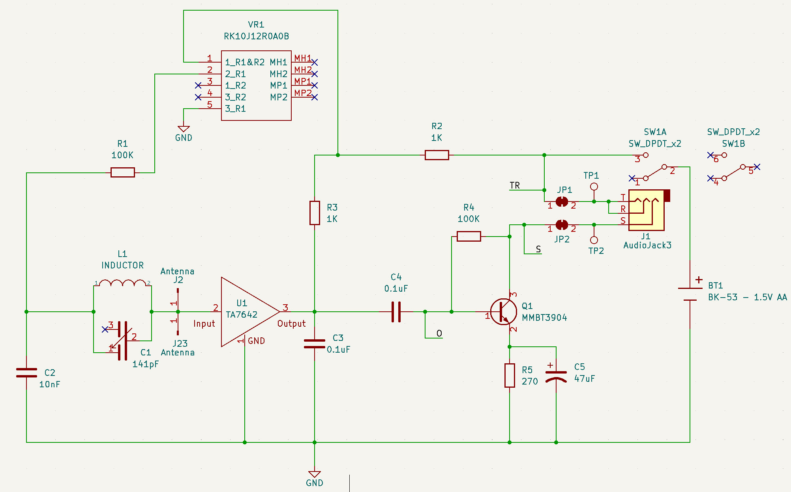

About The Badge
For this year's badge we chose an old school design. A couple years later the component shortage is still real y'all.
Interesting Bits
1.5V design (sadly this means most LEDs won't work)
Based on the TA7642 AM Radio IC
Hackable design (see the Activities page)
Has a small transistor amp, which makes it suitable for listening on headphones
RF Gain Knob
Worth it's own special mention is the RF Gain knob on the badge. This little beauty dials up or dials down the amount of power the RF tuning circuit receives. Why, you ask? This year's badge is an amazingly cheap, quick & dirty, unshielded, and non-earth grounded AM radio with a single inductor capacitor tuner. Also, 1110 KFAB blasts the entire Omaha metro area with its radio waves.
The RF Gain knob is actually a bit of a hack in itself. By turning down the power to the RF tuner you can, in some cases, achieve better selectivity across the tuner dial. Without this hack, you simply receive 1110 KFAB across the whole tuner dial. <sarcasm>I know, I know. Who doesn't love listening to the AM radio equivalent of Fox News?</sarcasm> Has no one put sarcasm tags into the HTML spec yet?
Schematic
Yes. It's a bit hard to read on this page. Open it in a new tab or get a PDF.
Super Secret Stuff
You've read this far, probably hoping to find some clues on "what's hidden in the badge" or something similar. I'm going to let you in on a secret...
Nothing. There's absolutely nothing hidden inside the badge. There's no microcontroller. No flash storage. It's an old school analog design.
If you aren't happy with this response, I don't blame you. Badge challenges are fun. Did I mention that we've still got badge challenges? Drop by the Kernelcon CTF to find out more.